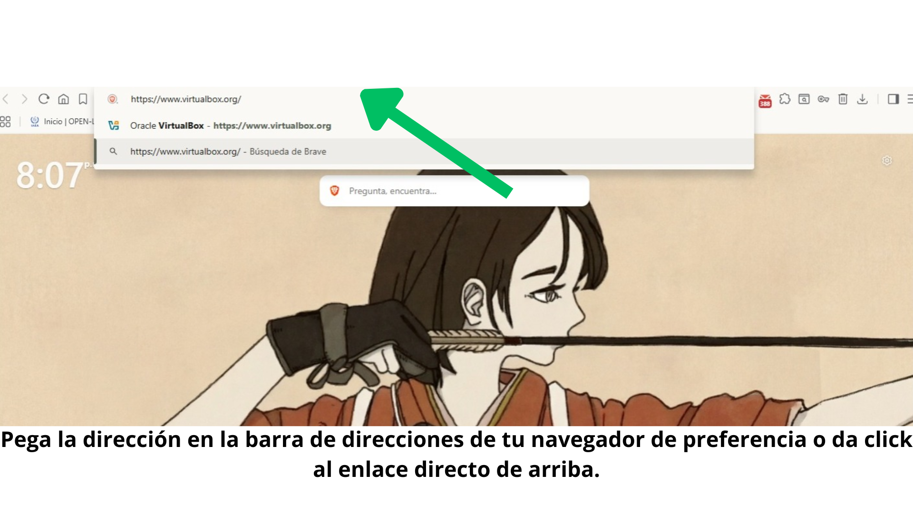
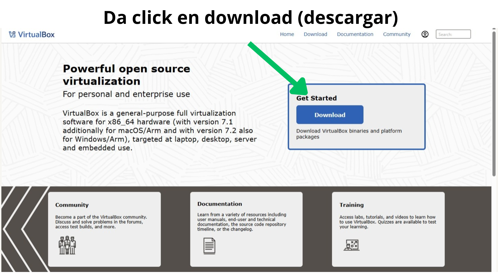
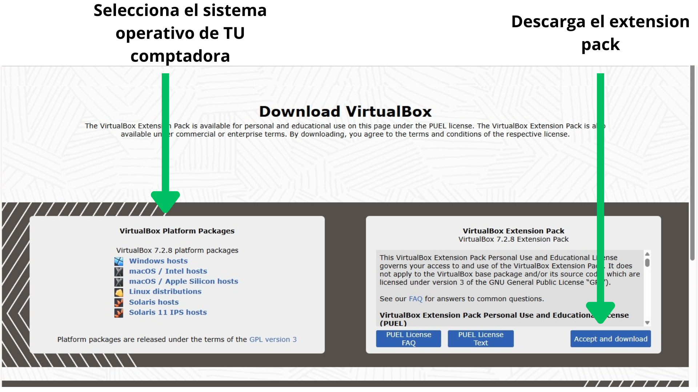

ls
Lista el contenido de un directorio.
📖 Ejemplo
ls -laProyecto escolar - Diccionario y guías básicas
Lista el contenido de un directorio.
ls -laCambia de directorio/carpetas.
cd DocumentosVirtualBox es un software de virtualización multiplataforma. Te permite crear "computadoras dentro de tu computadora" para probar Linux sin riesgos.
Ve al sitio oficial de VirtualBox o da click al enlace de abajo y descarga la versión para tu sistema operativo. También instala el extension pack ya que será necesario más adelante.
Ir a la página de descarga oficial



Figura 1: Selecciona "Windows hosts" si estás en PC.
Ve al sitio oficial y descarga la versión para tu sistema operativo.

Abre VirtualBox → "Nueva" → Nombre: Linux Mint → Tipo: Linux → Versión: Ubuntu (64-bit).

Recomendado: 4GB RAM mínimo, 25GB de disco duro dinámico.

💡 Tip: Recuerda activar la virtualización (VT-x/AMD-V) en la BIOS de tu PC.
Contenido en construcción. Aquí irá la guía paso a paso.
Contenido en construcción. Servidores virtualizados y contenedores.
Contenido en construcción. Máquinas virtuales en la nube de Microsoft.
Espacio para Discord, foros, grupos de ayuda, etc.